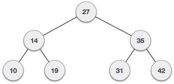

A binary search tree (BST) is a tree in which all nodes follows the below mentioned properties −
The left sub-tree of a node has key less than or equal to its parent node's key.
The right sub-tree of a node has key greater than or equal to its parent node's key.
Thus, a binary search tree (BST) divides all its sub-trees into two segments; left sub-tree and right sub-tree and can be defined as −
left_subtree (keys) ≤ node (key) ≤ right_subtree (keys)
BST is a collection of nodes arranged in a way where they maintain BST properties. Each node has key and associated value. While searching, the desired key is compared to the keys in BST and if found, the associated value is retrieved.
An example of BST −
We observe that the root node key (27) has all less-valued keys on the left sub-tree and higher valued keys on the right sub-tree.
Following are basic primary operations of a tree which are following.
Search − search an element in a tree.
Insert − insert an element in a tree.
Preorder Traversal − traverse a tree in a preorder manner.
Inorder Traversal − traverse a tree in an inorder manner.
Postorder Traversal − traverse a tree in a postorder manner.